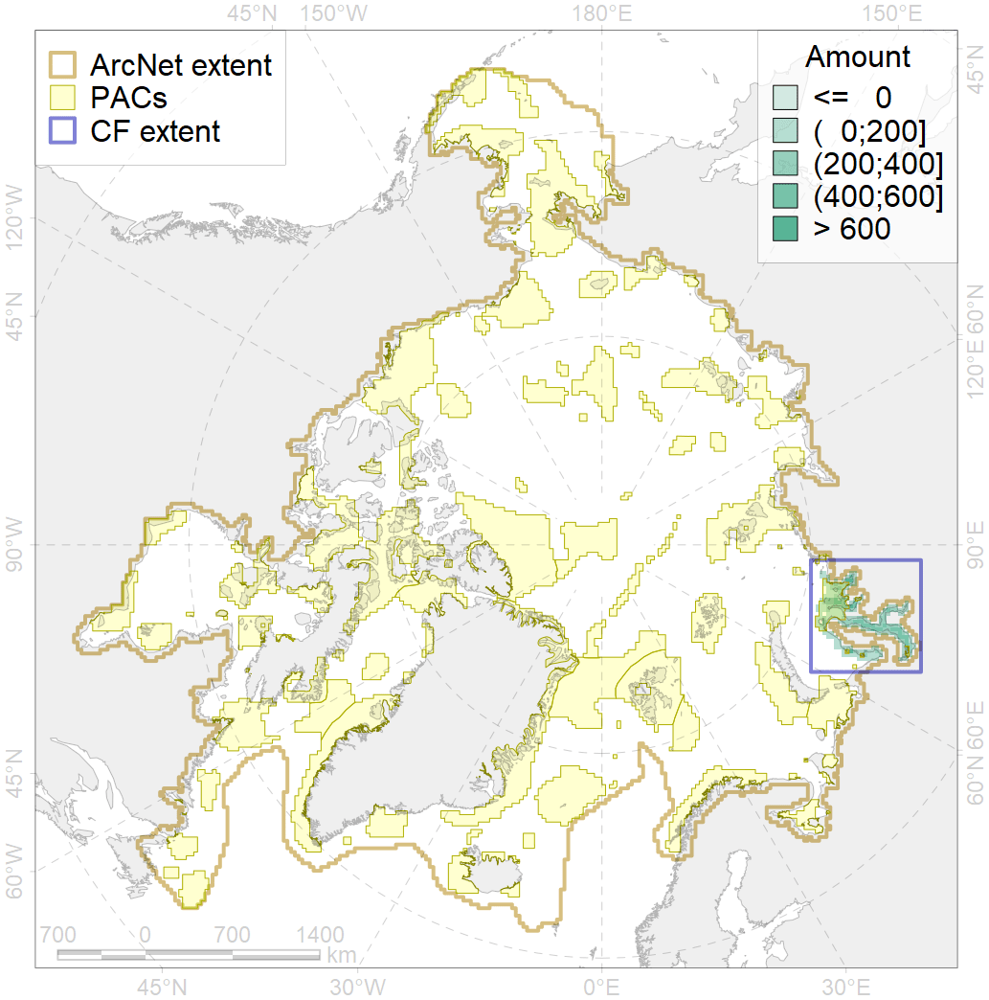
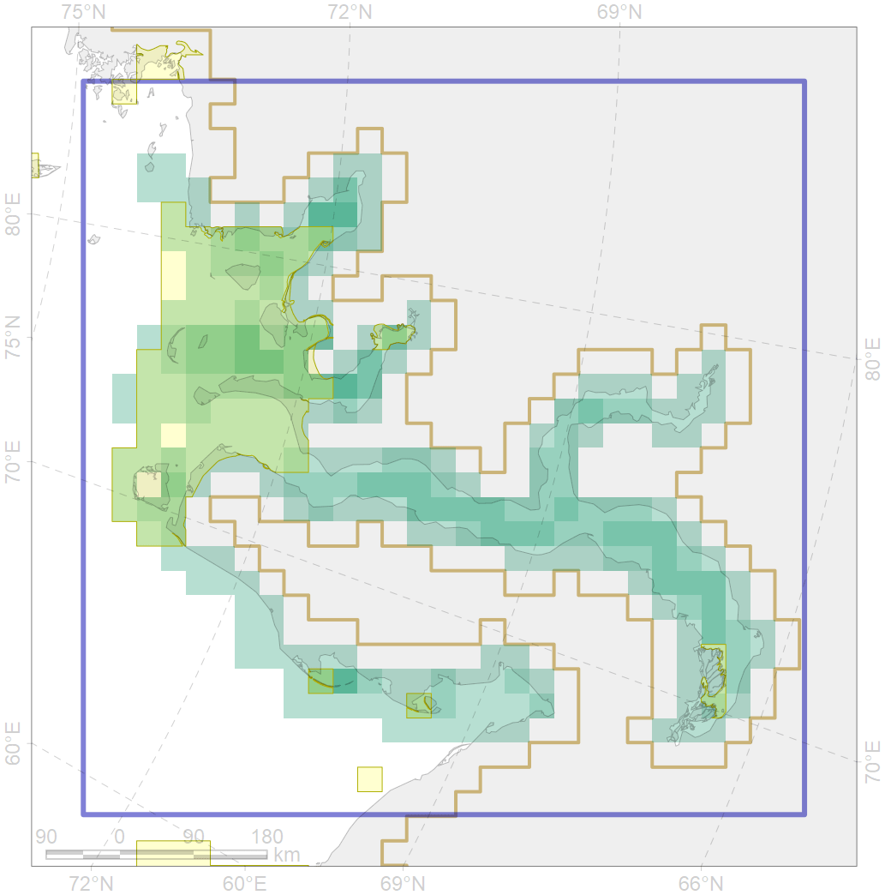

3011

| CF ID | 3011 |
| CF Name | Fast ice distribution in the Western part of the Kara Sea |
| Time Period | 2009 - 2018 |
| Source(s) | Merged ice charts |
| Seasonality | November - July |
| Depth Horizon | Sea level (0m) |
| Methodology | Processing of ice charts |
| Author Name | Nikita Platonov |
| Notes | |
| Conservation Target Set in the Scenario | 0.06 |
| Conservation Target Achieved in the Scenario | 0.389 (Scenario: 647.8%) |
| PAC ID | Proportion in the PAC | Contribution to ArcNet Target Achievement | PAC’s Contribution to the Achieved Target |
|---|---|---|---|
| 16 | 38.0% | 574.6% | 87.5% |
| 17 | 0.8% | 11.5% | 1.8% |
| 18 | 1.4% | 19.3% | 2.9% |
| inner | 40.2% | 605.5% | 92.2% |
| outer | 57.0% | 42.3% | 6.4% |